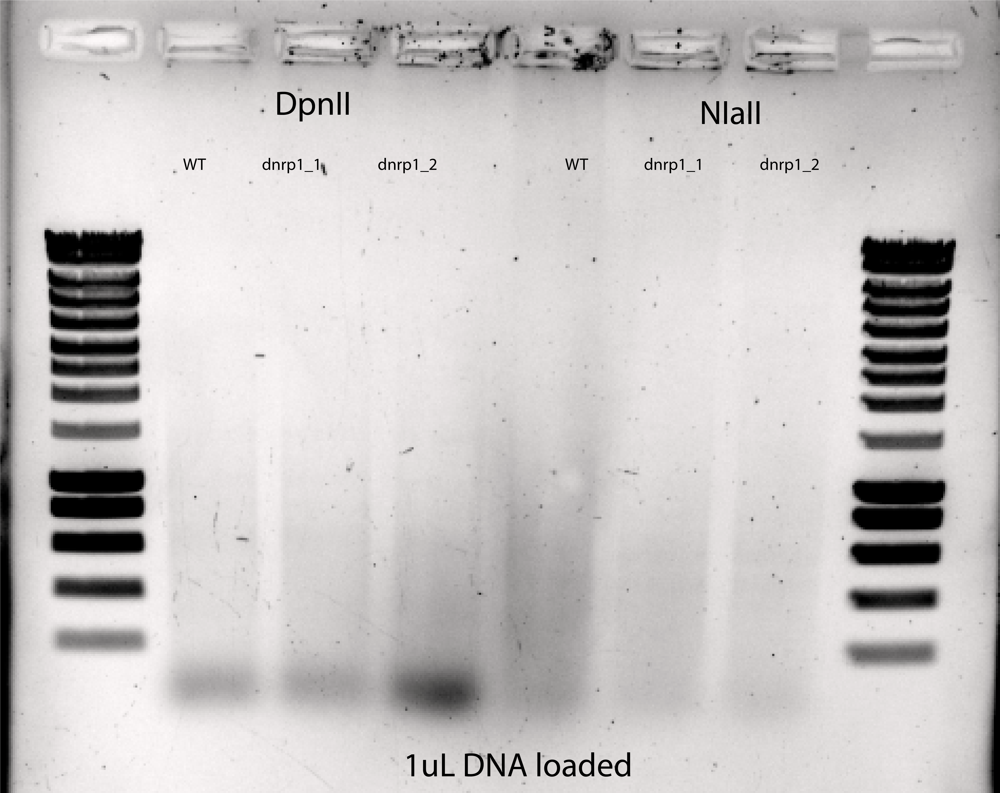
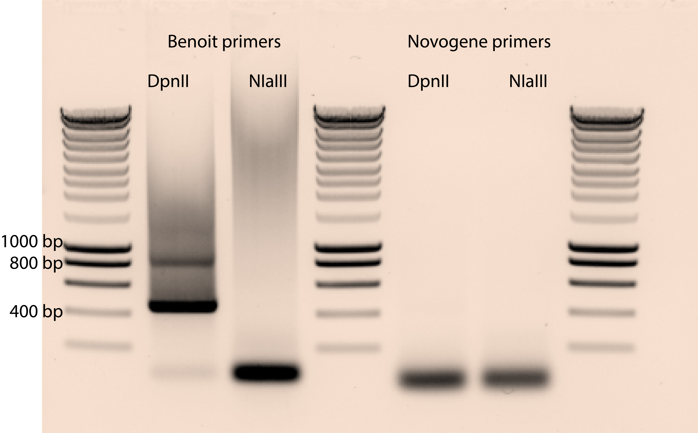
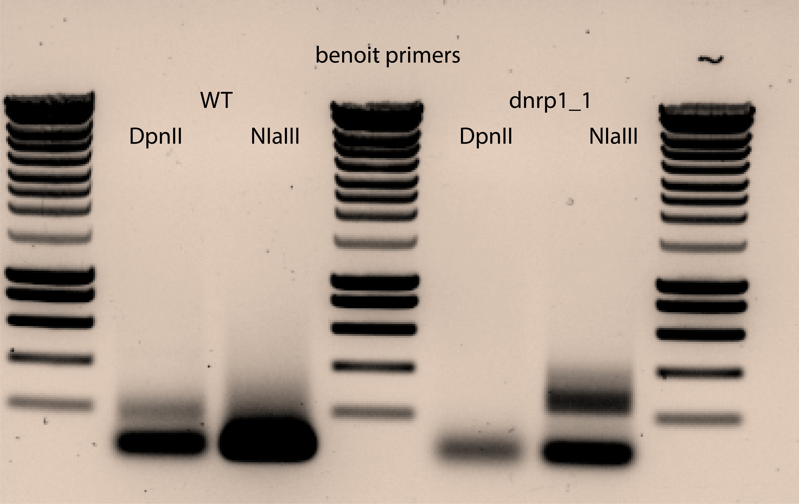
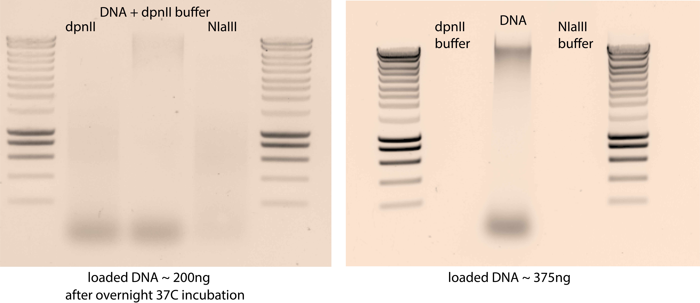
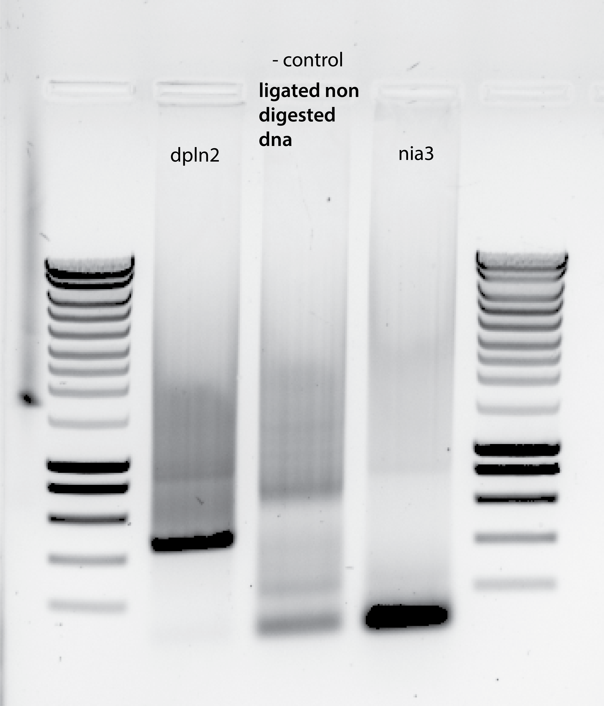
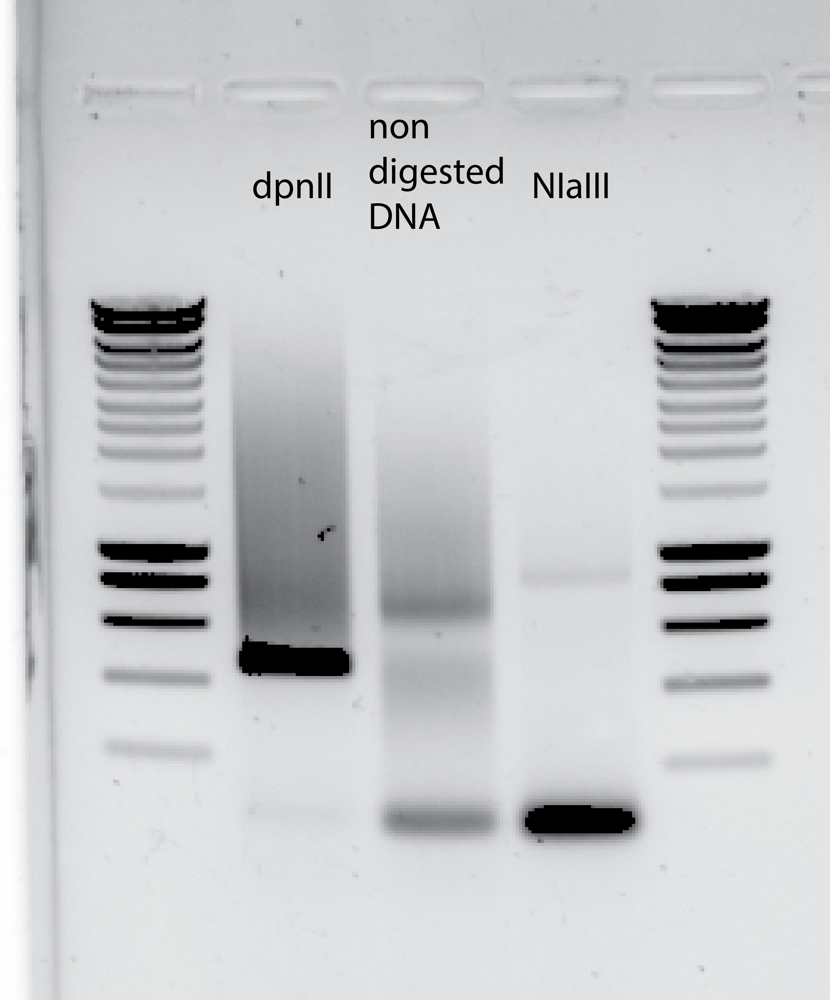
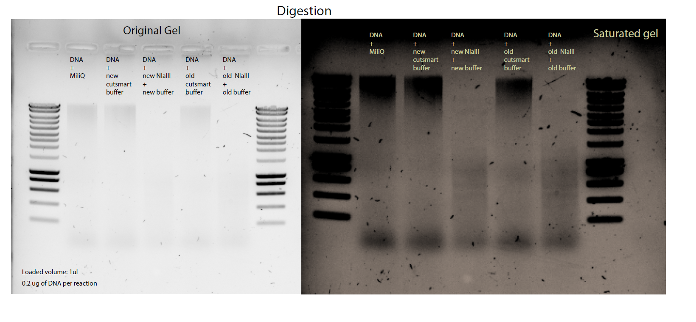
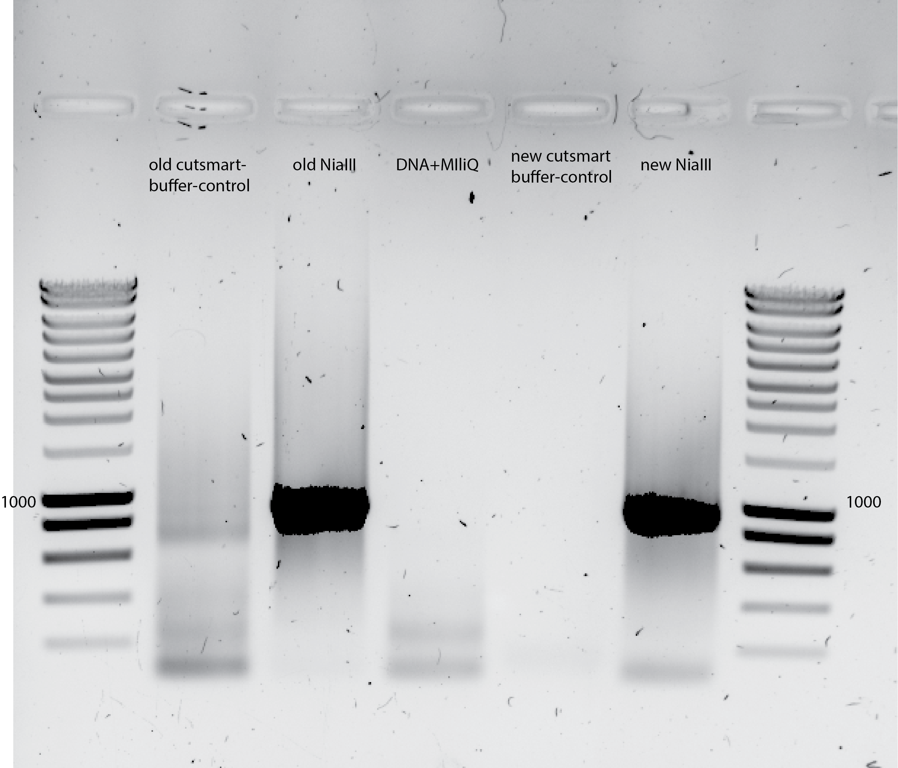

Title: Towards DNA sequencing: Digestion, Circularization and PCR of the transposon-genome junctions.¶
Date¶
26082020-14102020
Objective¶
To prepare the DNA for sequencing.
Method¶
I will follow the protocol suggested by Benoit , HERE
1st attempt
at 16:30: 2x 2 μg of genomic DNA are digested in parallel in Non-Stick microfuge tubes with 50 units of DpnII and NlaIII in 50 μl for 16 hours at 37°C.
5ul NIaIII(stored in -80C)+5ul Buffer (cutsmart)
5ul DpnII(stored in -20C)+5ul Buffer (DpnII buffer) (wrong buffer volumes because the total volume was not always 50ul)
the Final volumes per strain reaction were:
44.4uL(2ug DNA ylic133)+10ul=54.4uL
57.14uL(2ug DNA ylic136_1)+10ul=67.14uL
26.66uL(2ug DNA ylic136_2)+10ul+14ulMiliQ=50uL
{width=50%}
Comments:
I see in the DpnII lanes an accumulation of DNA at the bottom (RNAs???)
2nd attempt
5ul NIaIII(stored in -80C)+5ul Buffer (cutsmart) just in case of ylic133 and ylic136_2 , in which the final volume was 50ul counting the 5ul from the enzyme.
5ul DpnII(stored in -20C)+5ul Buffer (DpnII buffer) just in case of ylic133 and ylic136_2 , in which the final volume was 50ul counting the 5ul from the enzyme.
the Final volumes per strain reaction were:
45uL(2ug DNA ylic133)+5ul enzyme + 6ul 10Xbuffer + 4 ul MiliQ=60ul
57uL(2ug DNA ylic136_1)+5ul enzyme + 7ul 10Xbuffer+1ul MiliQ=70uL
27uL(2ug DNA ylic136_2)+5ul enzyme+13ulMiliQ+5ul buffer=50uL
{width=50%}
From 8:30 to 9:00 in the morning (after 16 hours)
The reactions are then heat inactivated at 65°C for 20 min and
at 9:10 until 15:10: circularized in the same tube by ligation with 25 Weiss units T4 Ligase for 6 hours at 22°C, in a volume of 400μl.
DNA is precipitated overnight or longer at -20°C in 0.3 M NaOAc pH5.2, 1 ml 100% EtOH, using 5 μg (5ul of 5mg/ml)linear acrylamide (Ambion AM9520) as a carrier.
The order matters!!
40ul of 3M NaOAc pH 5.2 (10x dilution from 400ul)
5ul of linear acrylamide
1mL 100% EtOH
Next day:
Then centrifuged for 20 min at 16100x g, 4°C.
Pellets are washed with 1 ml 70% EtOH, for 20 min at 16100 x g, 20°C.
After complete removal of the supernatant, pellets are dried for 10 min at 37°C.
Each circularized DNA preparation is then resuspended in water and divided into 10X 100 μl PCR reactions.
I resuspended the DNA in 100ul of MiliQ to be used in the PCR.
One PCR to try (from ylic133) from the DpnII and NIaIII pool.
Recipe 1 PCR of 100uL
One PCR per digestion enzyme sample , hence 2*10 PCRs per strain.
Per PCR:
2uL dNTP 10mM
10ul Primer 48Fwd
10uL Primer 49Rev
20uL 5X Buffer TAq (commercial Buffer)
2uL DMSO 100%
9uL 25mM MgCl2 (2.25mM per 1x Buffer, this implies 11x dilution of a 25mM stock)
Total volume of DNA/10 , in this case 10ul DNA from DpnII or NIaII pool.
2.4uL TAQ Polymerase
PCR are performed in an MJ Research Peltier Thermal Cycler PTC-200 using the following conditions:
Protocol: 95°C 1 min, 35X [95°C 30 sec, 55°C 30 sec, 72°C 3 min], 72°C 10 min.
home made 10X Buffer:
10x TAQ buffer: 500 mM Tris-HCl pH9.2, 22.5 mM MgCl2, 160 mM NH4SO4, 20% DMSO, 1% Triton X-100 - stored at -20°C
PCR Purification
100μl of each pool are purified using a PCR clean-up/gel extraction kit (Macherey-Nagel) according to the manufacturer protocol, with the following modifications.
DNA is bound to the column for 30s at 3000x g;
30 μl of elution buffer (Elution buffer from Kit) is applied to the column and incubated for 3 min, then spun for 1 min at 11000x g at 20°C.
The eluate is reapplied to the column and a second elution is performed under the same conditions.
Purified PCR products are quantified by absorbance at 260 nm.
DNA Concentration Quantification
Target minimal DNA concentration, assuming a total final volume of 300uL per PCR: 17ng/uL . To reach 5ug of DNA for NOVOGENE.
Measure using Qbit and Nanodrop.
PCR Imaging Troubleshooting
On a 1% agarose gel, the product runs as a smear from 250 bp to 1.2 kb, with highest density centered around 500bp. The 867 bp size band present in the NlaIII treated sample and the 465 bp size band present in the DpnII treated sample correspond to untransposed pBK549.
The smear is the important part.
 {width=50%}
{width=50%}
 {width=50%}
{width=50%}
{width=50%}
{width=50%}
Repetition of the whole procedure using negative controls¶
Digestion¶
05102020:
Using DNA from ylic136_2 for digestion
negative control: DNA + DPNII buffer + MiliQ
50ul total volume digestion with 27uL DNA (75ng/ul) to reach 2ug of DNA

Ligation and PCR¶
06102020:
One important change from previous ligation is to use 1ul of linear acrylamide instead of 5uL as I was using (by miscalculation)
PCR using 2ul of DNA template :
New Primers used , larger primers to avoid primer dimerization:
E1_HT48_MiniDS_FW GCTTAGGTAGTGCTGGTCGTAGTGAGAGCTGAAtccgtcccgcaagttaaata E2_HT49_MiniDS_RV AGGTCAGTCACATGGTTAGGACGCAGATAGACAacgaaaacgaacgggataaa
The PCRs 
PCR using 9.32ul of DNA template : 
Tracking down the DNA degradation for the NIaIII digested DNA¶
Making a new digestion with controls on the NIaIII buffer , and with old and new stocks of both of them , buffer and enzyme.
The digestion was NOT performed with non stick RNA free tubes , just normal eppis.
This new test will be scaled down to 5ul total volume for the digestion.
Testing the buffer |
Testing the digestion |
Testing the DNA |
|
|---|---|---|---|
With new and old stocks of buffer and enzyme |
- 2.7ul DNA - 0.5ulBuffer (new/old stock) - 1.8ul MiliQ |
- 2.7ul DNA - 0.5ul Buffer (new/old stock) - 0.5ul NIaIII (new/old stock) - 1.3ul MiliQ |
- 2.7ul DNA - 2.3ul MiliQ |

Ligation next day
Resuspend the washed DNA in 10ul MiliQ
I use all the DNA from the ligation : 9.32ul DNA for 20ul PCR
Primer-set : E1 48Fwd /E2 49Rev
{width=80%}
Results¶
The first attempt of the PCR did not work , I got no bands , maybe something went wrong in the ligation part.
In the 2nd attempt:
PCR in presence of 2% DMSO:
Primer dimers clearly visible
I see the untransposed plasmid band for DpnII in the non diluted DNA sample and a bit of smear , while I can not see anything for the 50X diluted one.
For NIaIII I see the smear for the 50X diluted sample and not the band for the untransposed plasmid. The smear is bit high compared with the reference. does that mean that I have low coverage (long pieces between MiniDs in the genome)?. I dont see anything for the non diluted sample.
Degradation noticed for the PCR done on NiaIII digested DNA
Conclusion¶
After many tests I can conclude that my samples are OK for satay sequencing because I got the expected results in gel for DpnII and NIaIII digestion.